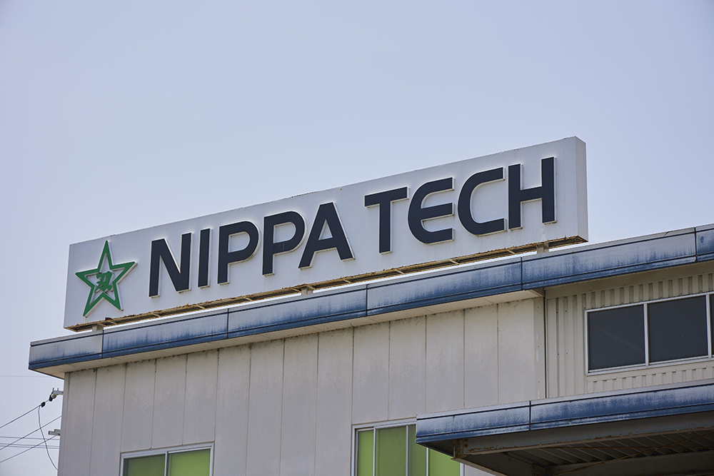
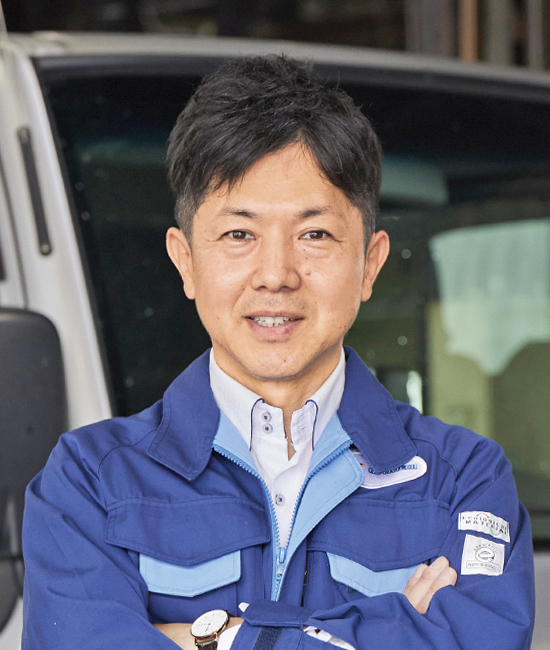
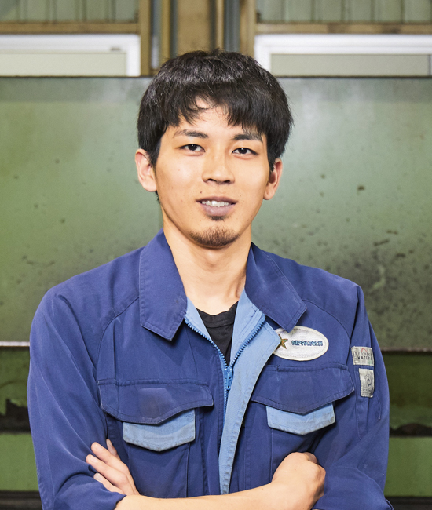

ここに動画が表示されます
ニッパテックが選ばれる理由
世界にまたがるネットワーク
日本のビッグ企業の大型輸出プラントや海外の鉄鋼をはじめ
あらゆる金属加工プラントにも多くのニッパテック製品が使われています。
数字で見る、私たちの実績
創業 1921年
1921
年
半世紀以上に渡り、日本のものづくりを支え続けています。
取引継続率
0
%
一度お取引いただいたお客様から、長く信頼されています。
製品寿命向上実績
0
%~
最適な素材と熱処理で、従来品を超える耐久性を実現。
年間製造数
0
点以上
多種多様なニーズに、高い生産能力でお応えします。
課題解決事例
製鉄業界
生産ライン停止時間を大幅削減
- お客様の課題
- 高温環境下での刃物の摩耗が早く、頻繁な交換による生産ラインの停止が悩みの種でした。これにより、納期遅延やコスト増が課題となっていました。
- 弊社のご提案
- 独自の耐熱超合金素材と、最先端の熱処理技術を組み合わせた高耐久刃物をご提案。高温下でも摩耗を最小限に抑え、長寿命化を実現しました。
- 導入後の成果
- 刃物の寿命が従来の3.5倍に向上し、交換頻度が激減。ライン停止時間は年間80%削減され、生産効率が飛躍的に向上。お客様からは「コスト削減と納期遵守が同時に実現できた」と高い評価をいただきました。
アピールポイント
このソリューションは、高温環境に悩む他業界（例：〇〇加工、□□□製造）にも応用可能。貴社の生産性向上を強力にサポートいたします！
建機メーカー
品質安定でブランド力を強化
- お客様の課題
- 特殊形状部品の加工精度のバラつきが大きく、不良率の高さが課題でした。これが製品全体の信頼性低下やブランドイメージへの悪影響を招いていました。
- 弊社のご提案
- 創業から半世紀以上磨き上げた精密加工技術を活用し、部品形状に最適化した専用スマート治具を自社開発。AI制御によるμm単位の超精密加工プロセスを導入し、品質の安定化を図りました。
- 導入後の成果
- 加工精度が従来比50%向上、不良率は1/10以下に激減。製品の信頼性が向上し、エンドユーザーからの満足度が飛躍的にアップ。お客様のブランドは「高品質の代名詞」として市場でさらに評価され、受注増にもつながりました。
アピールポイント
この技術は、複雑形状部品の加工に悩むあらゆる業界（例：○○○、□□□□）で活用可能。貴社の製品価値と市場競争力を最大化します！
モノづくり、そしてヒトづくり
弊社では、最高の製品を生み出すためには、それを支える「ヒト」の成長が不可欠だと考えています。長年の経験を持つ熟練技術者から若手まで、全ての従業員が能力を最大限に発揮できる環境を整備し、技術の継承と革新を追求しています。
お客様の期待を超える真の価値は、こうした「ヒトづくり」から生まれると信じています。
経営理念について詳しく見る


K.Tさん
福山営業所 所長
「常に最高精度を追求し、限界に挑戦しています。」

M.Fさん
生産管理部 研磨
「お客様に安心と信頼をお届けするため、厳格な品質基準を守ります。」